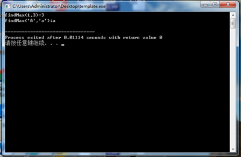

小明是一个很牛逼的程序员，在国际标准化组织工作。
他现在正在设计新一代的C++标准，标准中有一个待实现的函数：findMax()，这个函数要求使用者输入任何类型的数据，他都能找到最大的一个。
于是他想到了这个：
int findMax(int a,int b){
if(a>b){
return a;
}
else{
return b;
}
}
char findMax(char a,char b){
if(a>b){
return a;
}
else{
return b;
}
}这种写法成功的解决了问题，可小明还是不满意：
1.有太多冗余的代码，写出来的头文件又大又low，全世界的开发者都要骂娘
2.又太多的数据结构需要兼容，还有世界各地的开发者整出来的奇形怪状的数据结构，不能满足标准库的要求
它更换了一种写法：
template <class T> T findMax(T a,T b){ if(a>b){ return a; } else{ return b; } }
看起来好奇怪！它能运行吗？
让我们测试一下：
int main(){
cout<<"findMax(1,3):"<<findMax(1,3)<<endl;
cout<<"findMax('A','a'):"<<findMax('A','a')<<endl;
}
运行的十分正常，这段函数成功了！此时传入函数的参数，只要能够用“>”运算符来比较，就能够运行。比如int类型，函数会返回大的值，char类型，函数会返回ASCII码靠后的值。这称为泛型编程（Generic Programming），用人话来说就是用相同的方法处理不同的结构，而支撑这个思想的语法就成为模板（template）。整个STL标准模板库就是使用template来实现的，他把教科书上的各种数据结构，比如链表啦，队列啦，栈啦，都封装到一起，供我们调（tou）用（lan），再配合它的algorithm算法库，连排序，二分查找都不用自己写啦！